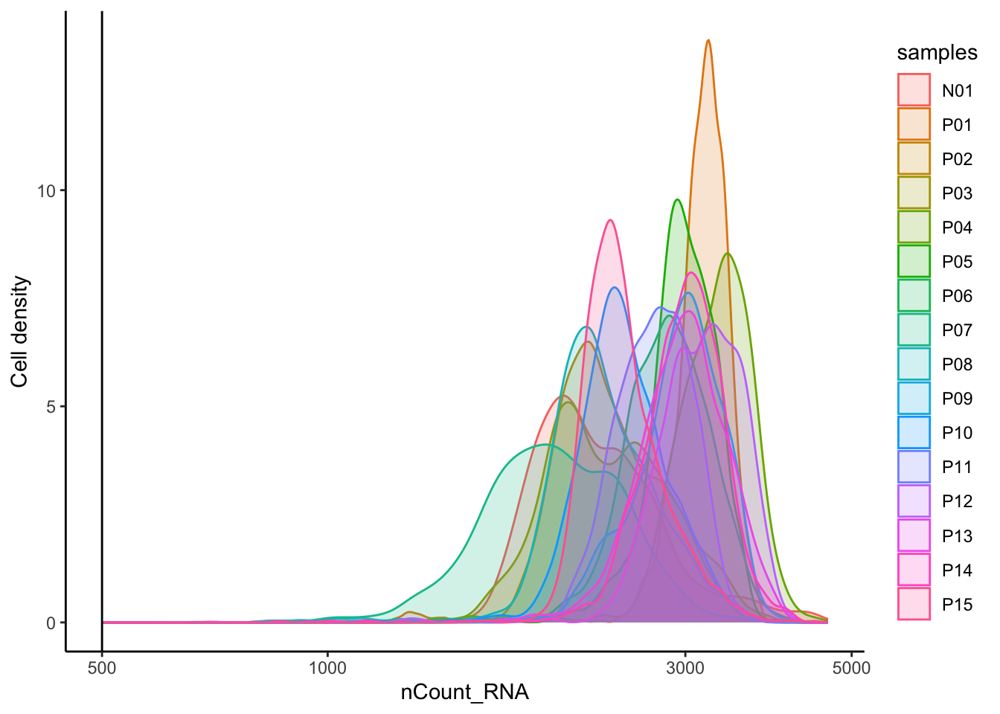
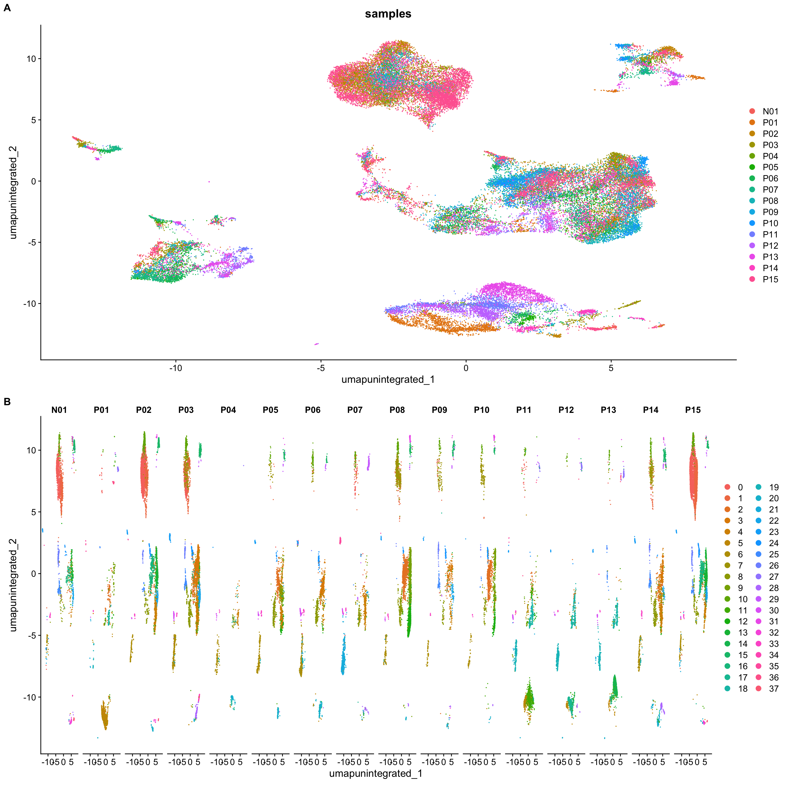
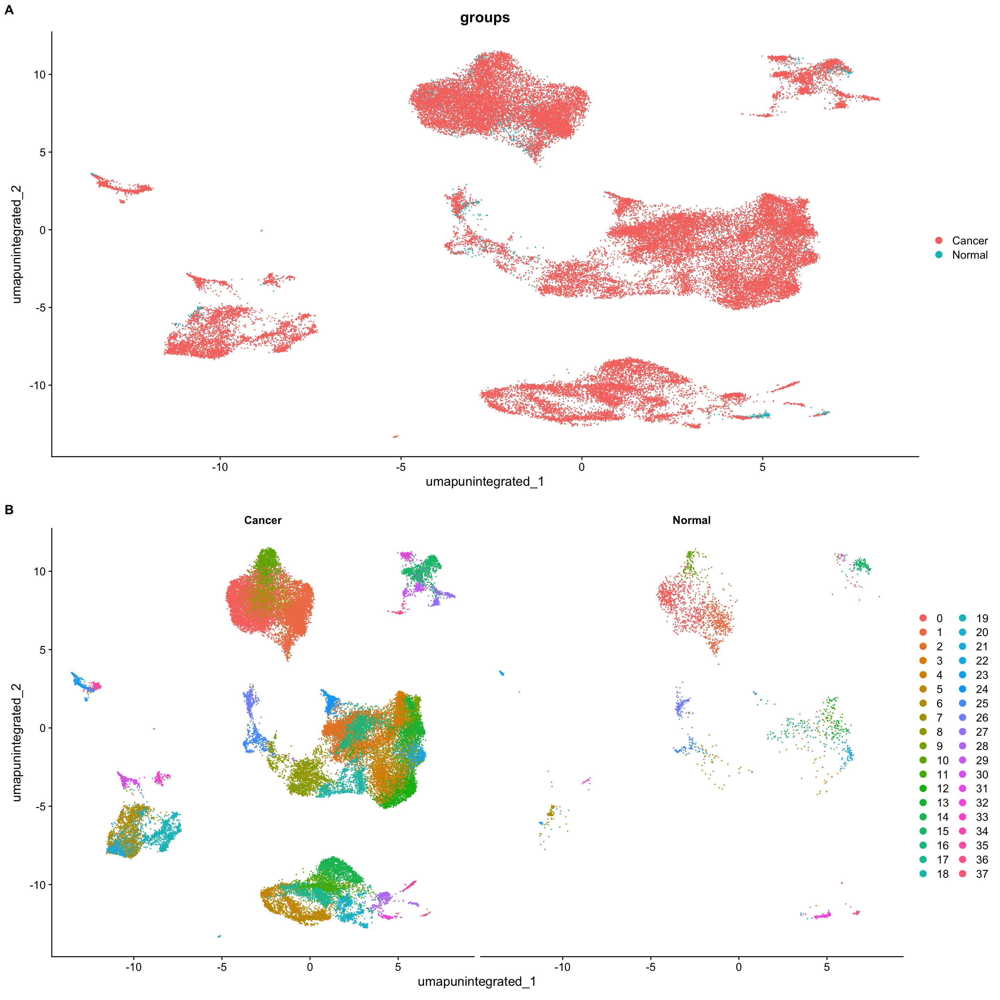

30 多个单细胞数据集整合分析
参考：单细胞多数据集整合示例
有时候，为了扩大数据量和得到更加可靠的结论，我们可能获取和下载了多个单细胞数据集。如果我们只关注某一细胞类型，如T cells或B cells或髓系细胞，那么就需要合并分析这些数据集，提取感兴趣的细胞亚群。这时候有两种方法可以选择：
对各个数据集分别降维分群，然后提取各个数据集的感兴趣细胞亚群并整合到一起
在一开始分析的时候就对这些数据集进行整合，然后分群，提起感兴趣细胞群
这个部分怎么分析并没有一个特定的答案或者规则，具体还是得看数据集适合以上提出的哪种分析顺序。
例如(Gong et al. 2023)就用了第二种方法。选取了三个鼻咽癌单细胞转录组数据： GSE150825, GSE150430, GSE162025。首先对三组数据进行整合，然后选取其中的一部分T细胞进行进一步分析。

这里我们介绍第一种方式，即对各数据集分别降维分群，然后提取并整合各个数据集的感兴趣细胞亚群。
30.1 加载包
30.2 GSE150430
这里我们直接载入 Section 28.4 中构建好的Seurat对象，该案例数据的介绍及读取过程参见该章节。
数据导入
merged_seurat_1 <- readRDS("output/sc_supplementary/GSE150430_merged_seurat.rds")
merged_seurat_1An object of class Seurat
24720 features across 48584 samples within 1 assay
Active assay: RNA (24720 features, 0 variable features)
16 layers present: counts.1, counts.2, counts.3, counts.4, counts.5, counts.6, counts.7, counts.8, counts.9, counts.10, counts.11, counts.12, counts.13, counts.14, counts.15, counts.16head(merged_seurat_1, 4) orig.ident nCount_RNA nFeature_RNA samples
N01_CAGAATCAGTAATCCC.1 N01 3470.970 4173 N01
N01_TGCGGGTAGTACGTAA.1 N01 3155.725 2994 N01
N01_AAACCTGAGGGTTTCT.1 N01 2347.034 1946 N01
N01_AAACCTGAGTTCCACA.1 N01 2362.495 1993 N01unique(merged_seurat_1$samples) [1] "N01" "P01" "P02" "P03" "P04" "P05" "P06" "P07" "P08" "P09" "P10" "P11"
[13] "P12" "P13" "P14" "P15"质控
# Add number of genes per UMI for each cell to metadata
merged_seurat_1$log10GenesPerUMI <- log10(merged_seurat_1$nFeature_RNA) / log10(merged_seurat_1$nCount_RNA)
summary(merged_seurat_1$log10GenesPerUMI) Min. 1st Qu. Median Mean 3rd Qu. Max.
0.8897 0.9488 0.9670 0.9773 0.9971 1.1429 # Compute percent mito ratio
merged_seurat_1$mitoRatio <- PercentageFeatureSet(object = merged_seurat_1,
pattern = "^MT-")
merged_seurat_1$mitoRatio <- merged_seurat_1$mitoRatio / 100
summary(merged_seurat_1$mitoRatio) Min. 1st Qu. Median Mean 3rd Qu. Max.
0.0006859 0.0106660 0.0127552 0.0129526 0.0150420 0.0407058 boxplot(merged_seurat_1$mitoRatio)# Add cell IDs to metadata
merged_seurat_1$cells <- rownames(merged_seurat_1@meta.data)# Visualize the number of cell counts per sample
merged_seurat_1@meta.data |>
ggplot(aes(x = samples, fill = samples)) +
geom_bar() +
theme_classic() +
theme(axis.text.x = element_text(angle = 45, vjust = 1, hjust = 1)) +
theme(plot.title = element_text(hjust = 0.5, face = "bold")) +
ggtitle("NCells")
# Visualize the number UMIs/transcripts per cell
merged_seurat_1@meta.data |>
ggplot(aes(color = samples, x = nCount_RNA, fill = samples)) +
geom_density(alpha = 0.2) +
scale_x_log10() +
theme_classic() +
ylab("Cell density") +
geom_vline(xintercept = 500)
# Visualize the distribution of genes detected per cell via histogram
merged_seurat_1@meta.data |>
ggplot(aes(color = samples, x = nFeature_RNA, fill= samples)) +
geom_density(alpha = 0.2) +
theme_classic() +
scale_x_log10() +
geom_vline(xintercept = 200)
# Visualize the overall complexity of the gene expression by visualizing the genes detected per UMI (novelty score)
merged_seurat_1@meta.data |>
ggplot(aes(x = log10GenesPerUMI, color = samples, fill=samples)) +
geom_density(alpha = 0.2) +
theme_classic() +
geom_vline(xintercept = 0.8)
# Visualize the distribution of mitochondrial gene expression detected per cell
merged_seurat_1@meta.data |>
ggplot(aes(color = samples, x = mitoRatio, fill = samples)) +
geom_density(alpha = 0.2) +
scale_x_log10() +
theme_classic() +
geom_vline(xintercept = 0.2)


# Visualize the correlation between genes detected and number of UMIs and determine whether strong presence of cells with low numbers of genes/UMIs
merged_seurat_1@meta.data |>
ggplot(aes(x = nCount_RNA, y = nFeature_RNA, color = mitoRatio)) +
geom_point() +
scale_colour_gradient(low = "gray90", high = "black") +
stat_smooth(method = lm) +
scale_x_log10() +
scale_y_log10() +
theme_classic() +
geom_vline(xintercept = 500) +
geom_hline(yintercept = 250) +
facet_wrap(~samples)
可以看到该数据集已经进行了质控，各项指标均在正常范围内，因此，我们可以跳过细胞/基因过滤，直接进入下面的环节。
归一化及消除非期望变异来源
由于这里SCTransform的数据量太大，在我的16GB MacBook Pro上超出了R内存分配上限，出现了“Error: vector memory exhausted (limit reached?)”报错。因此，这里在运行下面的脚本之前通过 Section 2.7.2 的方法进行了处理。
# SCTranform
merged_seurat_1 <- SCTransform(merged_seurat_1, verbose = FALSE); beep()
gc() # 释放未使用内存 used (Mb) gc trigger (Mb) limit (Mb) max used (Mb)
Ncells 8238258 440.0 14995254 800.9 NA 14081239 752.1
Vcells 988370669 7540.7 3232656170 24663.3 51200 3232655595 24663.3merged_seurat_1An object of class Seurat
46357 features across 48584 samples within 2 assays
Active assay: SCT (21637 features, 3000 variable features)
3 layers present: counts, data, scale.data
1 other assay present: RNA# Check which assays are stored in objects
merged_seurat_1@assays$RNA
Assay (v5) data with 24720 features for 48584 cells
First 10 features:
RP11-34P13.7, RP11-34P13.8, AL627309.1, AP006222.2, RP4-669L17.10,
RP4-669L17.2, RP5-857K21.4, RP11-206L10.3, RP11-206L10.5, RP11-206L10.2
Layers:
counts.1, counts.2, counts.3, counts.4, counts.5, counts.6, counts.7,
counts.8, counts.9, counts.10, counts.11, counts.12, counts.13,
counts.14, counts.15, counts.16
$SCT
SCTAssay data with 21637 features for 48584 cells, and 16 SCTModel(s)
Top 10 variable features:
RNASE6, PHACTR1, NR4A3, C1orf162, HMOX1, IFIT2, CD7, CD86, CLNK, CRIP1 # 查看目前默认的assay
DefaultAssay(merged_seurat_1)[1] "SCT"# 查看默认assay的layers
Layers(merged_seurat_1)[1] "counts" "data" "scale.data"评估细胞周期的影响
# Load cell cycle markers
s.genes <- cc.genes$s.genes
g2m.genes <- cc.genes$g2m.genes
# Score cells for cell cycle
merged_seurat_1 <- CellCycleScoring(merged_seurat_1,
g2m.features = g2m.genes,
s.features = s.genes)
# 现在的meta.data中多出了细胞周期评分“S.Score”和“G2M.Score”，以及推断的细胞所处的周期“Phase”
head(merged_seurat_1@meta.data) orig.ident nCount_RNA nFeature_RNA samples
N01_CAGAATCAGTAATCCC.1 N01 3470.970 4173 N01
N01_TGCGGGTAGTACGTAA.1 N01 3155.725 2994 N01
N01_AAACCTGAGGGTTTCT.1 N01 2347.034 1946 N01
N01_AAACCTGAGTTCCACA.1 N01 2362.495 1993 N01
N01_AAACCTGGTTCTCATT.1 N01 2130.465 1459 N01
N01_AAACGGGGTCCTCCAT.1 N01 2772.010 2573 N01
log10GenesPerUMI mitoRatio cells
N01_CAGAATCAGTAATCCC.1 1.0225953 0.008644269 N01_CAGAATCAGTAATCCC.1
N01_TGCGGGTAGTACGTAA.1 0.9934705 0.009895666 N01_TGCGGGTAGTACGTAA.1
N01_AAACCTGAGGGTTTCT.1 0.9758564 0.015183419 N01_AAACCTGAGGGTTTCT.1
N01_AAACCTGAGTTCCACA.1 0.9781039 0.014965958 N01_AAACCTGAGTTCCACA.1
N01_AAACCTGGTTCTCATT.1 0.9506023 0.017437508 N01_AAACCTGGTTCTCATT.1
N01_AAACGGGGTCCTCCAT.1 0.9906021 0.011233365 N01_AAACGGGGTCCTCCAT.1
nCount_SCT nFeature_SCT S.Score G2M.Score Phase
N01_CAGAATCAGTAATCCC.1 1840 1674 -0.05179250 -0.070444626 G1
N01_TGCGGGTAGTACGTAA.1 2840 2604 -0.04341940 -0.074302336 G1
N01_AAACCTGAGGGTTTCT.1 2443 1931 -0.02396942 -0.007239586 G1
N01_AAACCTGAGTTCCACA.1 2488 1972 -0.01294260 -0.021167805 G1
N01_AAACCTGGTTCTCATT.1 2104 1451 -0.05440456 -0.049531592 G1
N01_AAACGGGGTCCTCCAT.1 2892 2520 -0.10189203 -0.087537749 G1# 查看一下细胞周期的分布情况
table(merged_seurat_1$Phase)
G1 G2M S
33941 5147 9496 # 执行PCA
merged_seurat_1 <- RunPCA(merged_seurat_1)
# Plot the PCA colored by cell cycle phase
p1 <- DimPlot(merged_seurat_1,
reduction = "pca",
group.by= "Phase")
p2 <- DimPlot(merged_seurat_1,
reduction = "pca",
group.by= "Phase",
split.by = "Phase")
plot_grid(p1, p2, ncol = 2, labels = "AUTO")
可以看到细胞周期不是变异来源。
评估线粒体基因的影响
# Check quartile values
mito_sum <- summary(merged_seurat_1$mitoRatio)
mito_sum Min. 1st Qu. Median Mean 3rd Qu. Max.
0.0006859 0.0106660 0.0127552 0.0129526 0.0150420 0.0407058 # Turn mitoRatio into categorical factor vector based on quartile values
merged_seurat_1$mitoFr <- cut(merged_seurat_1$mitoRatio,
breaks=c(-Inf, mito_sum[2], mito_sum[3], mito_sum[5], Inf),
labels=c("Low", "Medium", "Medium high", "High"))
plot(merged_seurat_1$mitoFr)
# Plot the PCA colored by cell cycle phase
p1 <- DimPlot(merged_seurat_1,
reduction = "pca",
group.by= "mitoFr")
p2 <- DimPlot(merged_seurat_1,
reduction = "pca",
group.by= "mitoFr",
split.by = "mitoFr")
plot_grid(p1, p2, ncol = 2, labels = "AUTO")可以看到线粒体基因比例不是变异来源。
由于细胞周期和线粒体基因比例都不是非期望变异来源，所以我们这里不需要再次运行SCTransform来回归这些变量。接下来，直接进入数据整合环节。
数据整合
不进行整合时检验细胞分群情况
# 查看降维信息
names(merged_seurat_1@reductions)[1] "pca"# Run UMAP
merged_seurat_1 <- RunUMAP(merged_seurat_1, dims = 1:40, reduction = "pca"); beep()
# Plot UMAP
p1 <- DimPlot(merged_seurat_1, group.by = "samples", label = T)
p2 <- DimPlot(merged_seurat_1, split.by = "samples")
plot_grid(p1, p2, ncol = 1, labels = "AUTO")
# 由于样本数较多，我们再按照样本类型“Normal” vs. “Cancer”画一下UMAP图
merged_seurat_1$groups <- ifelse(merged_seurat_1$samples == "N01", "Normal", "Cancer")
p1a <- DimPlot(merged_seurat_1, group.by = "groups")
p2a <- DimPlot(merged_seurat_1, split.by = "groups")
plot_grid(p1a, p2a, ncol = 1, labels = "AUTO")
整合
这里我们用Harmony整合算法。
# 整合，比较耗时间，进度条会一直显示0%直至运算完成
seurat_integrated <- IntegrateLayers(object = merged_seurat_1,
method = HarmonyIntegration,
assay = "SCT", # Integrating SCTransformed data
orig.reduction = "pca",
verbose = FALSE); beep()
# 整合后合并RNA layer
seurat_integrated[["RNA"]] <- JoinLayers(seurat_integrated[["RNA"]])
# 查看整合后的降维信息
names(seurat_integrated@reductions)[1] "pca" "umap" "harmony"整合后检验细胞分群情况
set.seed(123456)
# Run UMAP
seurat_integrated <- RunUMAP(seurat_integrated,
dims = 1:40,
reduction = "harmony") # 更改降维来源为整合后的"harmony"
# Plot UMAP
p3 <- DimPlot(seurat_integrated, reduction = "umap", group.by = "samples")
p4 <- DimPlot(seurat_integrated, reduction = "umap", split.by = "samples")
plot_grid(p1, p2, p3, p4, ncol = 2, labels = c("Before Harmony", "", "After Harmony", ""))